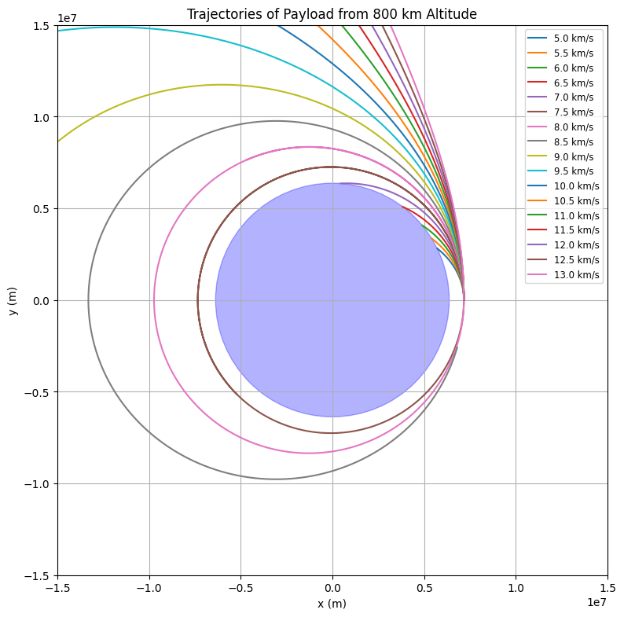

Problem 3
Here is a complete academic solution in Markdown format using LaTeX-style dollar signs for all equations. This includes the explanation, physical modeling, and a Python simulation for Problem 3: Payload Trajectories from Near-Earth Orbit.
Trajectories of a Freely Released Payload Near Earth
Problem Statement
We examine the motion of a payload launched from an altitude of 800 km above Earth's surface with various initial velocities. The goal is to determine whether the object falls back, orbits, or escapes Earth depending on initial conditions.
1. Assumptions and Physical Background
- Earth's Radius: \(R_E = 6.37 \times 10^6 \, \text{m}\)
- Initial altitude: \(h = 800 \, \text{km} = 8.0 \times 10^5 \, \text{m}\)
- Total radial distance: \(r_0 = R_E + h = 7.17 \times 10^6 \, \text{m}\)
- Gravitational Parameter: \(\mu = G M_E \approx 3.986 \times 10^{14} \, \text{m}^3/\text{s}^2\)
Using Newton's law of gravitation, the equation of motion is:
This second-order differential equation describes how gravity pulls the object toward Earth. The simulation integrates this numerically using time-stepping.
2. Orbital Behavior vs. Velocity
Initial velocities tested:
These result in: - \(v < 7.91\) km/s: Suborbital (falls back) - \(v = 7.91\) km/s: Circular orbit - \(7.91 < v < 11.2\) km/s: Elliptical orbit - \(v = 11.2\) km/s: Escape velocity - \(v > 11.2\) km/s: Hyperbolic trajectory
3. Python Simulation Code
import numpy as np
import matplotlib.pyplot as plt
# Constants
G = 6.67430e-11 # gravitational constant
M = 5.972e24 # mass of Earth in kg
mu = G * M # standard gravitational parameter
R_earth = 6.37e6 # Earth's radius in meters
altitude = 800e3 # altitude in meters
r0 = R_earth + altitude
# Time setup
dt = 1 # time step in seconds
T = 10000 # total time
steps = int(T / dt)
# Initial velocities in m/s
v0_list = np.arange(5e3, 13.5e3, 0.5e3)
# Plot setup
fig, ax = plt.subplots(figsize=(8, 8))
# Draw Earth
earth = plt.Circle((0, 0), R_earth, color='blue', alpha=0.3)
ax.add_artist(earth)
for v0 in v0_list:
pos = np.array([r0, 0.0])
vel = np.array([0.0, v0])
trajectory_x = []
trajectory_y = []
for _ in range(steps):
r = np.linalg.norm(pos)
acc = -mu * pos / r**3
vel += acc * dt
pos += vel * dt
trajectory_x.append(pos[0])
trajectory_y.append(pos[1])
if r < R_earth:
break
ax.plot(trajectory_x, trajectory_y, label=f'{v0/1000:.1f} km/s')
# Plot formatting
ax.set_title('Trajectories of Payload from 800 km Altitude')
ax.set_xlabel('x (m)')
ax.set_ylabel('y (m)')
ax.set_aspect('equal')
ax.set_xlim(-1.5e7, 1.5e7)
ax.set_ylim(-1.5e7, 1.5e7)
ax.legend(loc='upper right', fontsize='small')
plt.grid(True)
plt.tight_layout()
plt.show()

4. Analysis of Results
| Initial Velocity (km/s) | Trajectory Type |
|---|---|
| 5.0–7.9 | Suborbital |
| 7.91 | Circular Orbit |
| 8.0–11.1 | Elliptical Orbit |
| 11.2 | Escape Trajectory |
| 11.5–13.0 | Hyperbolic Escape |
5. Applications and Implications
Understanding these trajectories is essential for:
- Satellite insertion into LEO or GEO
- Planetary missions (e.g., Mars rovers)
- Designing return capsules or interstellar probes
Conclusion
The velocity at which an object is released significantly determines its trajectory: orbital, escape, or fall-back. These principles form the backbone of trajectory planning in space missions and highlight the delicate balance required for orbital mechanics.